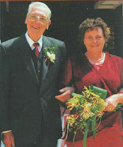
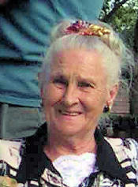
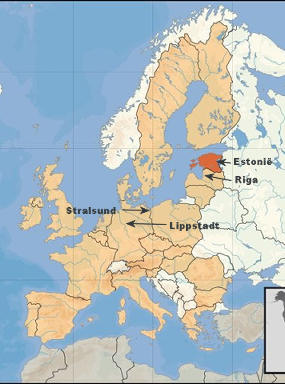
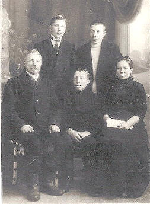
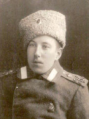
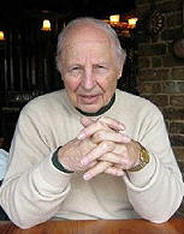
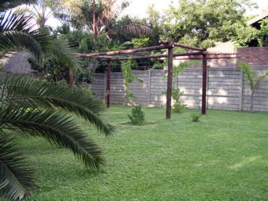
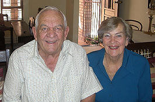
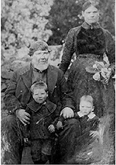

|
Indeks: |

b1.c3.d2.e2.f2.g1. Jan Hendrik Henning. 'n Dag nadat ons die Februarie 2007 Nuusbriewe in die pos gegooi het, kry ons 'n oproep van Gerritje (Gerry) Henning van Lyttelton, Centurion, waarin sy ons verwittig dat oom Jan Henning op Sondag 28 Januarie 2007 oorlede is, vyf dae voordat hy 85 jaar oud sou word.
Oom Jan het vir baie jare (1984 tot 1997) met groot onderskeiding en liefde op die eerste bestuur van die Familiebond gedien. Oom Jan was altyd die oudste lid op die bestuur van die Familiebond en moes dikwels van hierdie status gebruik maak om ons jongklomp 'n bietjie in die bek te ruk.Met sy dood kom een van die mooiste gevalle van liefdesdiens, waarvan ons weet, tot 'n einde. Sy eggenote, Sarie, het hom gedurende 2002, na 'n lang siekbed, ontval. Gedurende die laaste tien weke van haar siekte, het hul bure se dogter, Gerritje (Gerry) van der Smit, 'n gekwalifiseerde verpleegster, oom Jan getrou bygestaan met die versorging van tant Sarie. Gerry se ouers het gedurende 1975 vanaf Nederland na Suid-Afrika geëmigreer en was die voorafgaande 16 jaar die Henning gesin se bure.
Gedurende Desember 2004 besluit Gerry om na Nederland terug te keer. Twee maande later, gedurende Februarie 2005 word ontdek dat oom Jan 'n gewas in sy brein ontwikkel het. Die gewas was so ineengestrengel met die senuwees dat dit nie verwyder kon word nie. Oom Jan het wel bestraling ontvang. Ten spyte van die feit dat sy oë, spraak en gehoor aangetas was, het hy positief gebly en was dankbaar vir elke dag wat hy langer gespaar gebly het.
Gedurende Mei 2005 het oom Jan 'n dringende boodskap na Gerry van der Smit in Nederland gestuur, waarin hy vra of sy nie bereid sou wees om hom te kom versorg nie. Sy het onmiddelik ingewillig en na Suid-Afrika teruggekeer.Sy het hierdie taak met soveel liefde, toewyding en deernis gedoen dat oom Jan haar in November 2005 gevra het of sy nie met hom sou trou nie. Sy het ingewillig en hulle is op 3 Desember 2005 getroud.
Gedurende November 2006 het oom Jan se toestand verder versleg en het 'n gewas, wat intussen in sy rugmurg ontwikkel het, hom bykans heeltemal hulpeloos gelaat. Gerry het voortgegaan om hom met deernis te versorg. Dit was egter vir hom baie moeilik om nou, na so 'n lang, aktiewe lewe, so totaal hulpeloos te wees. Hy het byvoorbeeld tot op 83-jarige ouderdom nog tennis gespeel en self sy huis en tuin versorg.Hy is uiteindelik op Sondag 28 Januarie 2007 oorlede en is op 1 Februarie 2007 begrawe. Tipies soos oom Jan was: Hy het die grootste gedeelte van sy begrafnis self, voor die tyd beplan.
Sodra al die formaliteite wat met 'n afsterwe gepaard gaan, afgehandel is, beplan Gerry om na Nederland terug te keer.
Al die Hennings in Suid-Afrika salueer jou, Gerry. Baie dankie vir hierdie wondelike gebaar van naastediens en -liefde.

Jacoba Johanna Maria (gebore van der Walt), eggenote van wyle b6.c4.d1.e5.f3.g7. Willem Frederik Henning van De Wagensdrif is op 31 Januarie 2007 in die intensiewe sorg eenheid van die Eugene Marais Hospitaal, Pretoria oorlede aan 'n hartaanval in die ouderdom van 80 jaar en vyf maande. Sy is op 5 Februarie vanuit die NG Kerk Cullinan begrawe. Haar dogter, Rina Venter (Cornelia Catharina Jacoba [h4]) het vir ons laat weet dat haar oudste broer, Hansie (Johannes Lodewikus, h1) vir baie jare omgesien het na sy ouers. Sy vertel verder:
"Ons Ouboet Hansie moes van 'n baie jong ouderdom die plek van ons vader inneem, aangesien my vader baie maande van die huis af weg was weens werk verpligtinge. My moeder moes dan alleen met ons klompie kinders by die huis agter bly.
Dit was Hansie wat gehelp het met ons skoolwerk en getroos het as een seer gekry het. Hy was baie beskermend teenoor my moeder en geen taak was ooit vir hom te groot om vir haar te doen nie.
Na hy gematrikuleer het, het hy aangebly by ons ouers. Ons ander kinders is een na die ander getroud en uit die huis uit. Hy het die taak om na ons ouers te kyk op sy skouers geneem. Deur die erns van sy besluit het hy nooit getrou nie, maar sy vriendin van baie jare is nou sy steunpillaar - ons dank ons Heiland vir haar.
Nadat ons vader met pensioen gegaan het, het hulle die huis in die stad verkoop en is die drie van hulle na Hansie se plaas te De Wagensdrif toe, daar het hulle die volgende twintig jaar gebly en was die drie onafskeidbaar van mekaar.
Die dag toe my vader oorlede is ( hy het inmekaar gesak toe hulle winkel toe was ) was dit Hansie wat met hom gejaag het na Cullinan hospitaal, waar my vader dood verklaar is. (Dit was so veertig kilometers wat hy gejaag het).
Hy en ons moeder het aangebly op die plaas. Hy het alles in sy vermoë gedoen om die lewe vir ons moeder so aangenaam moontlik te maak. Omtrent ses maande na ons vader se dood het Hansie begin siek word, en is hy op 14 November 2006 met Kolon Kanker gediagnoseer. Die kanker het reeds na sy blaas en lewer versprei. Hy is op 28 Desember geopereer om die kanker te verwyder maar die kanker was so erg dat hulle net vir hom 'n maagsak ingesit het en nie aan die kanker gesny het nie. Hy sal nou net Chemo en bestraling kry.
Die skok dat haar seun so siek is, was te groot vir ons ou moeder en sy het 'n hartaanval gehad en is in die Eugene Marais Hospitaal opgeneem waar sy op 31 Januarie om 05:10 die oggend oorlede is.
Hansie het so siek as wat hy is, nog deurgery na Bronkhorstspruit en al haar begrafnisreëlings gaan tref. Die oggend van ons moeder se begrafnis het hy weereens uit die bed opgestaan en haar kerkdiens en die verrigtinge by die begraafplaas bygewoon.
Hy is op die oomblik baie siek en ons bid vir 'n Goddelikke genesing vir hom!"


In Haantjie no 84 van November 2005 het ons kortliks berig oor 'n brief wat ons van Heino Henning van Toronto, Ontario, Kanada ontvang het, waarin hy vertel dat sy voorsate in Estonië (een van die ou Sowjet Unie state) gewoon het.
Vir diegene wat nie weet waar Estonië is nie - Estonië word aan die Noordekant geskei van Finland deur die Golf van Finland; Aan die Westekant is die Baltiese see; Aan die Suidekant is Latvia (waar ons bewus is van 'n Henning stam wat baie eeue gelede hier gewoon het) en aan die Oostekant grens Estonië aan Rusland.
Heino het nou so 'n bietjie meer oor sy mense vertel . . . en is dit 'n interessante storie! Hulle was aanvanklik almal plaasarbeiders, maar later plaas-eienaars. Voor 1825 het alle Estoniërs wat op die platteland gewoon het, slegs een voornaam gehad - sonder 'n van. Wanneer so 'n persoon aangespreek - of na hom/haar verwys is, is die voornaam gekombineer met die plaasnaam waar hulle gewoon en/of besit het. Die plaasnaam is eerste genoem en dan die voornaam. So het verskeie geslagte van Heino se voorsate op die plaas Tammi gewoon. Die eerste voorsaat wat hy kennis van het, was Peeter, wat in 1664 in die distrik Pärnumaa gebore is. Peeter het mettertyd getrek na die distrik Vörumaa waar hy op die plaas Tammi gaan werk het. Hy het dus die naam Tammi Peeter gekry.
Verskeie van Tammi Peeter se nasate het op die plaas Tammi gewoon. So het Tammi Peeter se seun, Jacob bekend gestaan as Tammi Jacob. Tammi Jacob wat in 1699 gebore is, het mettertyd die eienaar van die plaas Tammi geword. Hy is op 5 November 1721 getroud met "Big Peeter's daughter Kadri *1701" (soos Heino dit vir ons uit Estonies in Engels vertaal het). Hulle kinders was, Hans, gebore 24-6-1722 en Juhan gebore 19-12-1723

Tammi Juhan is op 8-11-1753 getroud met "Dear Andre daughter Hipp." Hy was ook die eienaar van die plaas Tammi. Hy en sy vrou het ook twee seuns gehad, Gustav *10-12-1753 en Hans *20-5-1756.
Hans het op 'n ander plaas gaan werk naby die dorpie Linnarti. Hy het dus die naam Linnarti Hans gekry. Hy was drie keer getroud:1. op 10-11-1784 met Tammi Jüri's wife sister, Anni;
2. op 19-8-1795 met "Flie Jaan's daughter Anni", en
3. met "Mihkel's daughter Ann"
Linnarti Hans het ses kinders gehad, waarvan nommer 5 se naam Jacob was. Jacob is gebore op 26-10-1802.
In 1825 het die regering besluit dat alle mense vanne moes kry. Elke persoon kon self 'n van kies, wat dan formeel deur die Sekretaris vir die Streek, of die groot grondeienaars toegeken is. Baie mense het 'n grap hiervan gemaak. Hul nasate sit dus vandag nog opgeskeep met een of ander snaakse van.
So het Jacob, die vyfde kind van Linnarti Hans die eerste persoon in Estonië geword om die van Henning te kry. Sy broers en susters het almal ander vanne gekry.
|  |  |
'n Uitvloeisel van hierdie toekenning van vanne was dat 'n persoon se naam nou permanent was. Jou naam is op jou belastingvorm gedruk en jy was verplig om jou belastings te betaal.
Jacob Henning *26-10-1802 en sy vrou, Mari *1800 het vyf kinders gehad: Juhan *1823, Gustav *1825, Hinrik *1830, †1841, Mechka *1839 en Peeter *1845.
Die geslagsregister verderaan is ook in ons besit en sal mettertyd ook op die Henning webwerf op Internet vertoon word.
Ons wil tog meld dat Heino Henning op 12 Desember 1925 gebore is. Hy is dus reeds 81 jaar oud.
Hy is die vyfde geslag van hierdie familie wat die van Henning gebruik.


Ons plaas graag twee briewe wat ons oor die afgelope drie maande ontvang het.
Die eerste brief kom van Rina Venter van Gars-fontein, Pretoria. Rina is natuurlik b6.c4.d1.e5.f3.g7.h4 Cornelia Catharina Jacoba Henning in die Henning familie-kroniek:
Met ons toer in November 2004 het ons op die 8ste November 'n besoek gebring aan Elandskraal.
Aangesien ek graag iets blywends wou gehad het wat my altyd aan Elandskraal sou herrinner, het ek 'n paar druiwe lote afgesny. Nou moet dit net in ag geneem word dat dit heeltemal die verkeerde tyd was om druiwe steggies te plant, aangesien dit in die somer was en die druiwe nog vol in blaar was. Ek het dit met groot geloof in ons koue houer sak in nat papier toegedraai gehou, tot ons weer terug in Pretoria was. Tuis het ons die steggies eers in papierkoppies geplant, elke aand in die huis gebring en in die oggende weer na buite geneem tot hulle begin uitloop het. Toe die plantjies sterk genoeg was het ons vir ons die druiweprieël op die foto aangelê waarmee ek vandag kan spog. As alles goed gaan eet ons oor 'n jaar of wat Elandskraal druiwe!
Die eerste eienaar van die plaas, Elandskraal, in die Cradockdistrik was natuurlik Pieter Hendrik Henning, die stamvader van die Hennings van Suid-Afrika. Hy het vanaf 1786 tot en met sy dood in 1823 hier gewoon. Van sy b10. nasate het tot en met die jare vyftig van die 20ste eeu op hierdie plaas gewoon. Ons kon uit die belastingopgawes vir die jaar 1809 aflei dat Pieter Hendrik Henning 1 800 druiwestokke gehad het. Waar hierdie plaas in daardie jare 22 uur te perd vanaf Graaff-Reinet geleë was, kon Pieter Hendrik sekerlik nie die druiwe in die dorp gaan verkoop het nie. en het sekerlik wyn daarvan gemaak. Dit het juis in daardie dae 'n gewilde praktyk in die Graaff-Reinet distrik geword. Met 1 800 druiwestokke kan 'n mens seker 'n hele paar liters wyn verbou, of hoe?

Die tweede brief kom van b1.c6.d14.e4.f1. Chris (Christiaan Rudolph Jacobus) - en Winnie Henning van Heuwelsig, Bloemfontein. Hulle skryf:
Ons is twee ou mense, maar geniet Haantjie baie. My man (Chris) is 82 en ek word vanjaar 80. Met die genade van Bo, is ek nog betreklik gesond. Chris het al baie operasies die afgelope vier jaar gehad, o.a. 'n aneurisme in die aorta, 'n 4-aar hartoperasie, 'n karotis en die ergste van alles is dat hy'n makulaar van die oë het en 80% blind is. Dit is vir hom baie moeilik, want hy was lief om met sy hande allerlei ou goedjies te maak. Ons bly baie lekker in 'n aftree-oord hier in Bloemfontein (Aliquando). Ons het net drie kleinkinders - twee is seuns wat al getroud is, met drie agterkleindogters. Hulle is vir ons baie, baie goed. Ons kleindogter met haar man en drie dogtertjies woon op Hartenbos. Ons dogter woon net oorkant die straat van ons af. Sy is al baie jare alleenlopend en baie onafhanklik - wil niks weet van weer trou nie. Ons is baie arm aan kinders - net die een dogter. Ons een kleinseun het darem oupa se name, nl Christiaan Rudolph Jacobus, alhoewel hy nou nie oupa se van het nie. Hierby ingesluit 'n klein donasie.[Baie dankie oom Chris en tannie Winnie]

Mauritz Henning van Theresapark, Pretoria-Noord het vir ons die foto langsaan laat kry. Tussen homself en sy broers, susters, neefs, niggies en ander familielede het hulle konsensus bereik dat die man op die foto b6.c4.d1. Willem Frederik Henning *25-10-1829 is. Hulle weet glad nie wie die vrou en kinders is nie, maar vermoed dat dit een van sy dogters met haar kinders kan wees.

Met die oudit van die Familiebond se boeke en opstel van die Finansiële State vir die jaar 2006 het dit duidelik geword dat ons vir hierdie jaar R2 230.00 minder ledebydraes ontvang het as gedurende 2005. Gedurende 2005 het ons lede R13 480.00 bygedra en gedurende 2006 slegs R11 250.00. Met ons 2006 uitgawes van R13 627.00, was dit R2 377.00 meer as ons inkomste uit ledebydraes. Gelukkig het ons uit ander bronne (soos die maak van fotostate, verkoop van CD's en ander aandenkings en rente op ons beleggings), 'n wins van R2 066.00 gemaak. Gedurende 2005 was ons uitgawes R13 292.00, wat baie mooi in balans met ons ledebydraes vir daardie jaar was. Waar ons onder die indruk was dat ledebydraes vir 2006 op dieselfde vlak as 2005 was, is hierdie syfers dus ietwat van 'n teleurstelling vir ons en laat dit die rooi ligte 'n bietjie flikker. Mens sal graag wil sien dat ons ledebydraes min of meer ons uitgawes dek. Ons wil darem ook meld dat die Familiebond oor die afgelope 22 jaar, sedert sy stigting in 1984 'n reserwe van R42 807.00 opgebou het - wat in die verlede hoofsaaklik aangewend is vir groot kapitaaluitgawes (soos rekenaartoerusting), die oprigting van die Henning museum en vir die drie landwye Henning feeste wat gedurende 1988, 1994 en 2004 gehou is. Hierdie reserwe sal hopelik eendag groot genoeg wees dat ons uit die rente-inkomste beurse aan belowende Henning studente kan toeken. Ons hoop natuurlik nog vir daardie groot bydra as iemand die Familiebond 'n begunstigde in sy/ haar boedel maak.
Baie dankie aan al ons lede wat oor die afgelope drie maande hul bydraes aangestuur het - so ook vir diegene wat volhou om maandeliks per debietorder by te dra. Soos gebruiklik vermeld ons die name van diegene wat bydraes van R200.00 en meer aangestuur het:
* Christiaan (C R) Henning en sy vrou Cornelia van Upington, asook sy twee minderjarige seuns, Tiaan en Marco, wat in eie reg volwaardige lede van die Familiebond is - R200.00
* Pieter (P H) Henning en sy vrou Anna, van Durbanville - R200.00
* Japie (J J) Henning en sy vrou Mabel, van Roodepoort - R200.00. Op 31 Oktober 2005 het (op daardie stadium) 'n onbekende persoon ook 'n bedrag van R200.00 in die Familiebond se rekening gedeponeer. Hy/sy het nagelaat om 'n lidnommer of naam te verstrek. Ons het nou vasgestel dat dit ook Japie en Mabel was.
* Jacobus (J C) Henning en sy vrou Anna, van Noordstad, Bloemfontein - R200.00
* Piet (P H) Henning en sy vrou, Deidré van Meyersdal, Alberton - R250.00
* Herman (HF) Henning en sy vrou Ena van Rietfontein, Pretoria wat Lewenslange lede is en elke jaar 'n ruimskootse bydrae lewer - R300.00
* Jan (JC) Henning en sy vrou Elsie van Hartbeesfontein - R400.00
* Dr Tjol (MEJ) Henning en sy vrou Amanda van Lyttelton, Centurion - R300.00
* Pieter (PB) Henning en sy vrou Johanna van Sinoville, Pretoria - R300.00
* Andries en Truidie Kruger van Barberton - R300.00
* Sylvia (gebore Henning) en haar man Gert Grobler van Randburg - R250.00